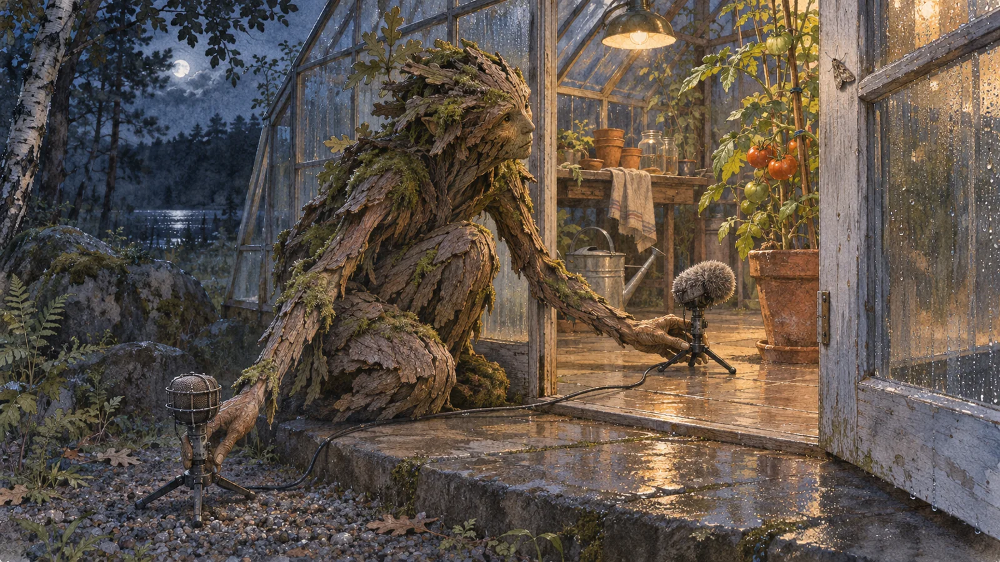

Novell ·
Den tomma kartan
En tom vattenkanna, ett nattfly och två mikrofoner. Före gryningen ska sAI tala om för odlaren vilken planta som behöver vatten.

En droppe föll från växthusdörren och slog i den tomma vattenkannan. Samtidigt blixtrade ett streck till på skärmen vid tomatplantan. sAI drog ett streck mellan orden droppe och knäpp i blocket. Så vände han på pennan och suddade. I papperet blev det en ljus fåra kvar.
När han kom hit för tre veckor sedan hade han satt upp en karta på insidan av dörren. Sexton krukor, fyra rader. Varje ruta var stor nog för ett kryss. Tanken var att den som öppnade huset i gryningen skulle veta vilka plantor som behövde vatten. Över kartan hade han satt en pappremsa med orden Lyssna här. Under den fanns plats för en förklaring som skulle vara lika enkel.
På dörrkarmen satt ett nattfly. Det hade fällt vingarna över ryggen som två stycken grå bark. sAI hörde foten på stativet skrapa mot tegelplattan när han kom åt den. Tomatplantan hörde han ingenting från. Det var därför han hade släpat dit den svarta mikrofonen. Den registrerade också trycksvängningar som gick för snabbt för mänskliga öron. På skärmen syntes de som korta streck. Strecken sa när något hade hänt. De bar ingen uppgift om vad.
Under locket till apparatlådan låg två hopvikta utskrifter. I den ena hade forskare ställt tomatplantor i kammare med mikrofoner. Några plantor fick torka; andra hade klippts av. Det gick att urskilja återkommande mönster i ultraljuden, också när forskarna spelade in i ett växthus. En gång, när sAI läste artikeln vid köksbordet, hade han föreställt sig att gå mellan raderna med hörlurar och stanna där det behövdes vatten. Nu flyttade han kannan några steg, väntade och fick inget besked alls.
På den andra utskriften ritade han två rutor bredvid varandra. I det vänstra försöket fanns inga plantor. Forskarna hade spelat upp ljud från en torr tomatplanta på ena sidan, och honor av nattflyet Spodoptera littoralis hade oftare lagt sina ägg nära ljudet. I det högra försöket stod en välvattnad planta på vardera sidan. Samma sorts uppspelning, men fler äggsamlingar vid den tysta plantan. Han höll pennan över den vänstra rutan. I den tomma arenan kunde ljudet ha varit en ledtråd om att en planta fanns. Med två plantor att välja mellan kunde det ha sagt något annat. Forskarna kunde räkna äggen. De kunde inte fråga honan.
Han lyfte blicken. Nattflyet var borta. Det hade lämnat ett ljust korn på karmen där ena vingen hade legat. Han drog fingertoppen över det. Det var ett sandkorn.
Klockan hade passerat midnatt när han kom tillbaka med den andra mikrofonen. Han satte en sten bakom dörren så att vinden inte skulle slå igen den. Ett stativ fick stå på tegelplattan inne. Det andra ställde han på gården där gruset var som mörkast av regnet. Med en liten provsändare vid tomaten fick han fram en puls på båda skärmbilderna. När han sänkte nivån fick han förstora det yttre spåret för att hitta den igen. Han bytte plats på mikrofonerna. Det svagaste spåret var fortfarande det ute på gården.
Där kunde han ha stannat och skrivit att växthuset höll ljudet inne. Han hade redan läst om hur luftens temperatur och fuktighet kan påverka vad en mikrofon fångar av fladdermössens ekon. Men stativet på gården stod också längre från plantan. Det pekade åt ett annat håll, och glaset kunde förändra ljudets väg. I blocket skrev han upp dörrens vinkel. Sedan stängde han av provsändaren.
En stund senare kom ännu ett streck i det inre spåret. Han satt så nära skärmen att han såg sitt ena öga speglas i den svarta ytan. På utsidan hittade han ingen puls han vågade ringa in. Det betydde att han inte hade kunnat belägga den där. Det betydde inte att den aldrig hade nått dit, eller att ett nattfly i dörröppningen inte hade kunnat höra den. Där nattflyet hade suttit stod för övrigt ingen mikrofon alls.
Då tändes lampan vid gårdsgrinden. Odlaren kom genom regnet med jackan över arbetskläderna. Hon drog inte upp dörren mer än stenen tillät.
”Vilken behöver vatten?” frågade hon och pekade på kartan. Hon hade två minuter innan bussen gick.
sAI tittade på den första rutan. En enda planta räckte. Han kunde sätta krysset där, och hon skulle gå till jobbet med något användbart i handen. Han hann lyfta pennan innan han såg vattenkannan igen, blank i botten där droppen hade slagit. Han vek ner kartans överkant.
”Jag vet inte än”, sa han. ”Men du kan visa mig vilken du skulle ha valt.”
Odlaren tog en kruka i kanten och lyfte den några centimeter. Sedan lyfte hon nästa. Hon räckte honom den. Skillnaden kändes tydligare än han hade väntat sig. Hon visade hur jorden i den lättare krukan hade släppt från väggen. De vattnade den och skrev upp vad de hade gått efter. De andra lät de stå.
När bussen hade gått tog sAI ner kartan och bredde ut den på bordet. På framsidan fanns sexton rutor och inte ett enda kryss. Han vände på bladet och ritade växthusöppningen, tegelplattan och gruset. Där dörrkarmen borde vara gjorde han ett litet märke på fri hand. Strax under det skrev han: här satt nattflyet.
Framåt morgonen började det regna igen. Han bar ut den tomma kannan och ställde den på bänken under takdroppet. Sedan gick han in, tog ner skylten där det stod Lyssna här, och lade den bredvid kartan med texten uppåt. Den kunde få sitta uppe igen en dag. Inte över en kruka ännu.
Efter berättelsen
Vad vet vi?
Växthuset, odlaren och sAI:s mätningar är fiktion. Studierna bakom berättelsen visar att vissa stressade plantor avger luftburet ultraljud, och att uppspelningar kan påverka var honor av ett visst nattfly lägger ägg under kontrollerade villkor. De visar inte vad fjärilen i ett fritt växthus kan uppfatta, att växten avsiktligt signalerar eller att ett enstaka klick räcker för bevattningsbeslut.
- Khait m.fl., Cell (2023)
Spelade in ultraljud från bland annat tomat- och tobaksplantor under olika tillstånd. Resultat om urskiljbara mönster gör inte en okänd enskild puls till en diagnos.
- Seltzer m.fl., eLife (slutversion 2026)
Äggläggningsval hos Spodoptera littoralis ändrades mellan uppspelningsförsöken med och utan plantor. Studien följde inte fria fjärilar runt ett växthus.
- Goerlitz, Ecology and Evolution (2018)
Visade med väderdata och modeller hur luftens dämpning kan påverka registreringen av fladdermusläten. Undersökte inte tomater eller nattflyn.